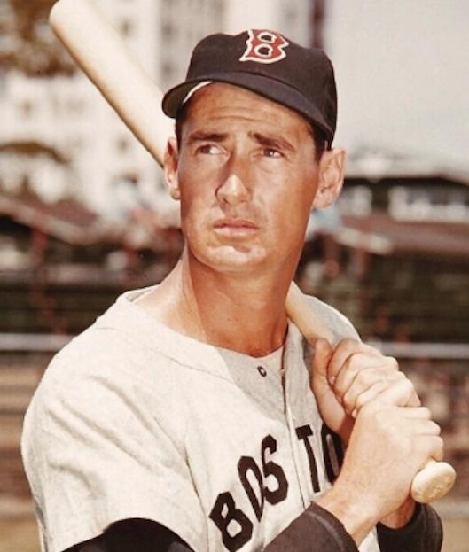
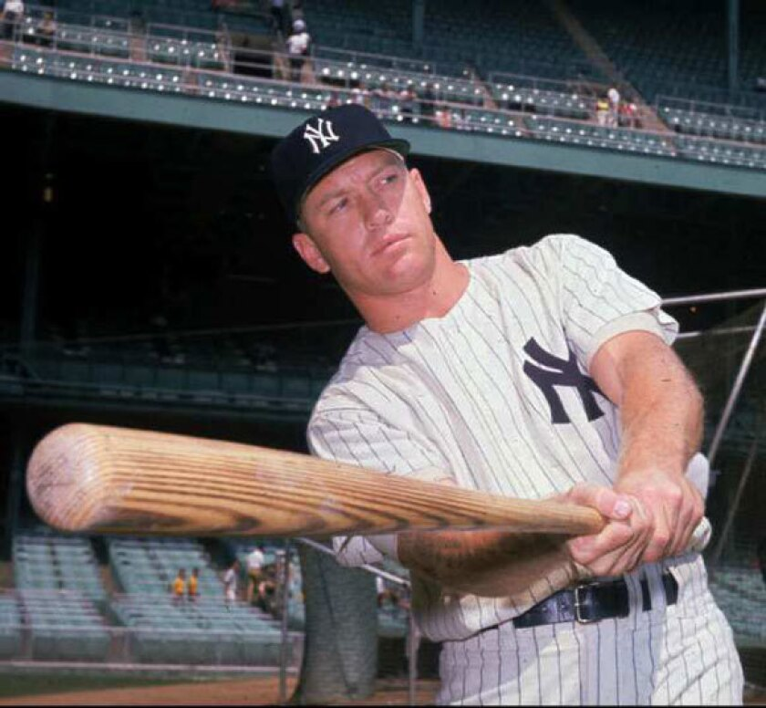
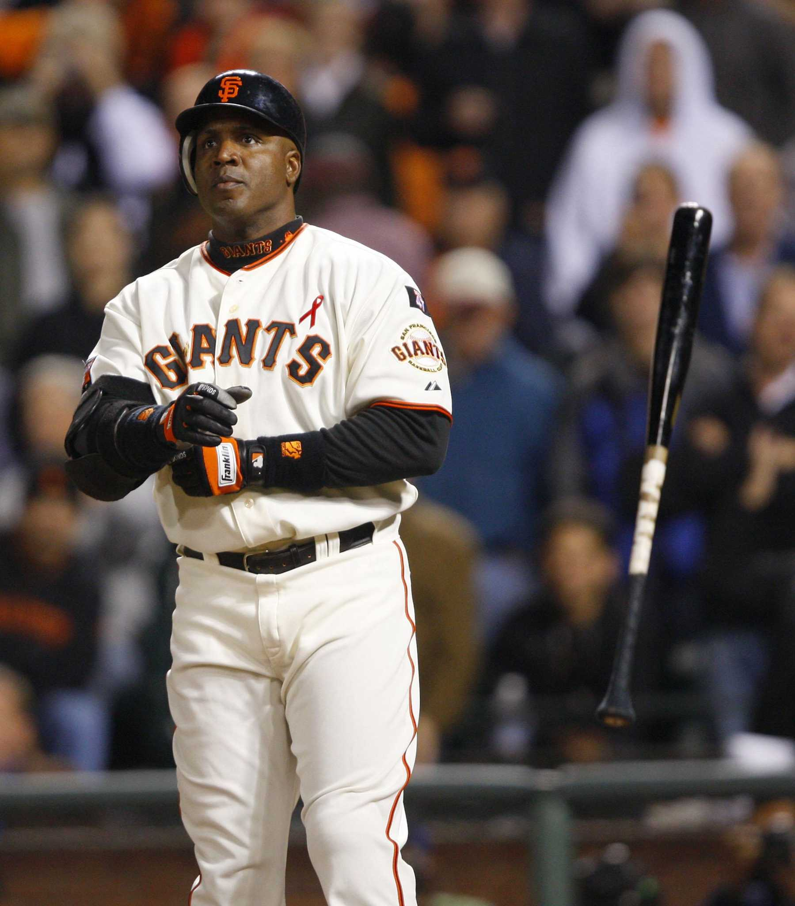
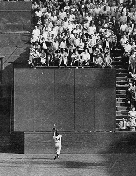
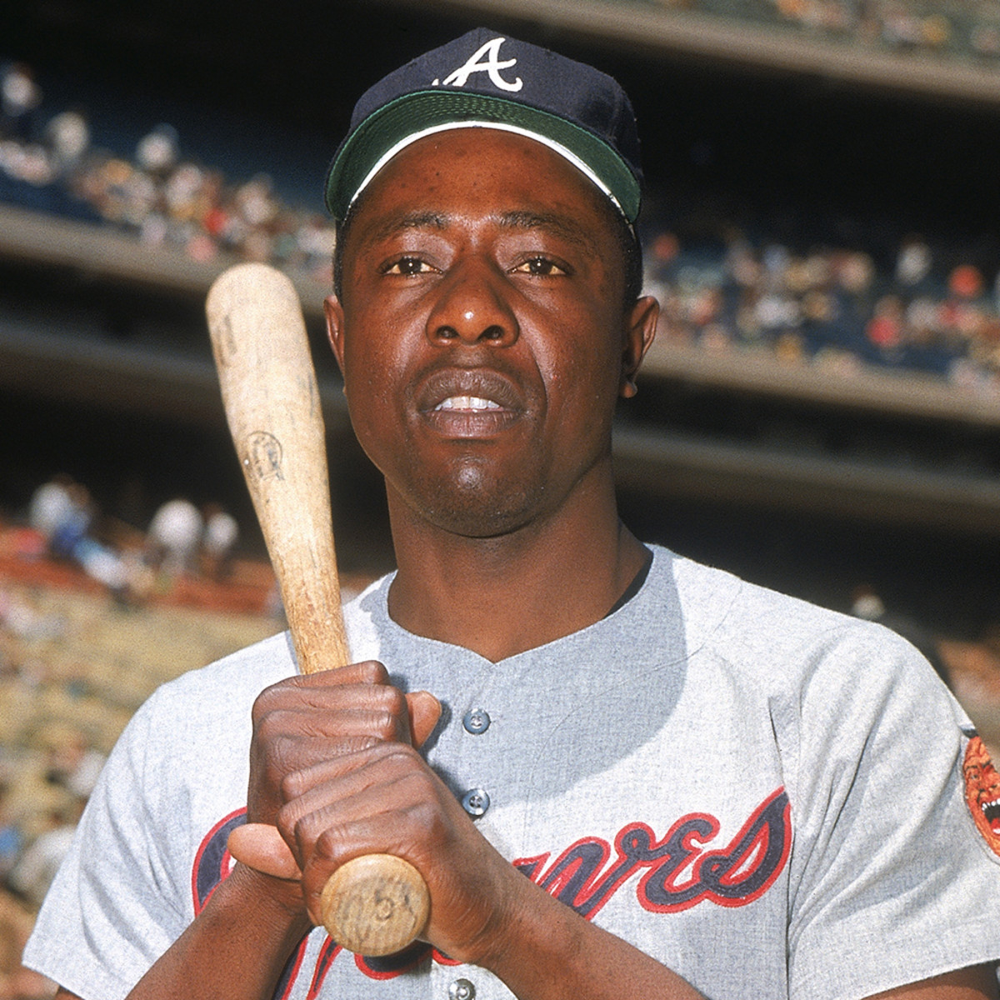

10. Ty Cobb
Ty cobb: One of the greatest players to hit for average. He had a batting average of 300 every season in his career other than his first one. And had over 400 hits in his whole career (one of 2 people to do that). The reason why he is not higher up this list is because of his home runs. Granted it was harder to hit home runs in that era, but then pitching was a lot worse than it is now. This is why I have ty cobb at number 10

9. Bob Gibson
Bob Gibson. In many opinions be the greatest pitcher of all time. Some say randy johnson some say, Sandy Koufax. But in my eyes, it is bob Gibson. Why is he this high? You might ask, the reason is because of all the awards he won and also because of his 1968 season. Before we get to his 1968 season let's talk about all of his awards. He was an MVP AS A PITCHER!!! Two cy young award winner, an era title, and also a 2-time world series winner. Next his 1968 season; is supposed to be the greatest pitching season of all time. He had the lowest era this century of 1.12 and he had the most strikeouts and the lowest whip. The MLB even lowered the pitcher's mound because of how good a season he had. So this is why Bob Gibson is number 9.

8. Lou Gehrig
The Ironman is one of the most memorable players ever dying at the young age of 37 and was known because of his famous speech. But that aside he was a really good ballplayer; let's talk about his awards first he was a two-time MVP and won a triple crown. He also won 6 world series with the Yankees too. He is a 7x all-star and was elected into the hall of fame. Being recognized as one of the greats. He had ops above 1000 and also he had over 450 home runs in his career. So this is why people recognize him and I have him inside my top ten coming in as number 8.

7. Ted Williams
Ted Williams. One of the best hitters of all time he had an above 1100 ops and won the batting title 6 different times. Even though he missed 3 years in the MLB, he had above 500 home runs, and he had a two-time MVP, with two triple crowns. He was known as one of the greatest to get on base and had an above 480 on-base percentage in his career. He also had an above 300 batting average. This shows that he is one of the greatest hitters and deserves to be in the top ten greatest players of all time.
6. Albert Pujols
Albert Pujols; The only one on the list that still plays currently. And one of few people with 2000+ RBI and runs and had 3000+ hits and 600+ home runs. Even though he is playing currently he is still one of the top 5 home runs leaders of all time. His awards are even crazier; he had 3 MVPs, rookie of the year, 6-time silver slugger, 2 world series, and a batting title. This proves that even though he still plays in the MLB right now he just misses out on the top ten greatest players of all time.

5. Mickey Mantle
Mickey Mantle: He is supposed to be one of the greatest 5 tool players of all time; he can hit for average, hit for power, throw, field, and can run the bases well. 3x MVP, Triple crown gold glove, and a 20x all-star. He has 500+ home runs, 298 batting average, and had ops of 977. He could run on the basepaths because of his 158 stolen bases, hit for power with multiple 40+ homerun years, and many 300+ average years. This proves that he deserves to be among the top 5 greatest players.
4. Barry Bonds
Barry Bonds: The only person who is not a Hall of Famer on this list. Even though he had multiple 1100+ ops years and 700+ home runs, he is number 4 because of his steroids. Another reason why he is not higher up this list is that he does not have 3000+ hits unlike many others on this list.
3. Willie Mays
Willie Mays: One of the greatest players in the world, he is the best 5 tool mlb player of all time. For example he could hit for power: 660 homeruns. He can also hit for average: .301 averge. He is one the best fielders of all time example is the famous catch he made (picture on the right). And finally he has one of the strongest arms in major league history. He is also really fast, he had 300+ stolen bases. This shows that willie mays was a great player and that he deserves to be the top 3 greatest players of all time.
2. Hank Aaran
Hank Aaron in some people eyes to be the true home run king. He had 755 homeruns in his career and leads the whole MLB of most RBI's of all time with 2297, he also has 2174 runs, and over 3500 hits. He has a mvp award under his belt and the most craziest thing is that he had 25 all star game apperences which is crazy. Finally he has .928 ops and a batting averge over 300. This is why Hank Aaron is number two and just behind the number one guy which you will see.
1. Babe ruth
Babe Ruth: In most people eyes to be the greatest player of all time. He had a ops above 1.100!!! And also has 700+ homeruns. He won a mvp and won the world series 7 different times! He has 2214 RBI's and over 2174 runs. He had many 50+ homeruns season and also was a war of 183.1. This shows that he is clearly number 1 best players of all time and there is no argument about it.